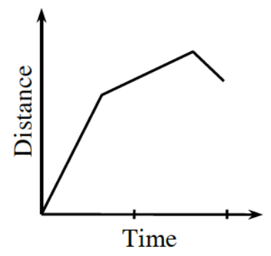

Let \(g(x)=3x+\frac{12}{x}\) for \(x>0\).
Steady Freddy always drives his car at a constant rate of \(30\) miles per hour.
Suppose that the distance traveled by a toy car in the first \(t\) seconds is \(d(t)=20t^2\). What is the velocity of the car at time \(t\)?
Given the distance graph, sketch the related velocity graph.

Evaluate the following limits.
Rewrite the following rational expression as a sum of two fractions with linear denominators by using partial fraction decomposition.
\[\frac{-20x+61}{-3x^2+17x-10}\]
An exponential function has an asymptote at \(y=10\). The function passes through the points \((4,6)\) and \((7,8)\). Determine the \(y\)-intercept for the function exactly and then approximate it to three decimal places.
This problem is a checkpoint for rewriting polar equations.
Rewrite each of the following polar equations in rectangular form.
Rewrite each of the following equations in polar form.
Check your answers by referring to the selected answers.
Ideally at this point you are comfortable working with these types of problems and can complete them correctly. If you feel that you need more confidence when completing these types of problems, then review the Polar Equations Checkpoint materials available at cpm.org and try the practice problems provided. From this point on, you will be expected to do problems like these correctly and with confidence.